Токио · Нихонбаси и Сумида · еда
Spice Cafe и HOPPERS: шри-ланкийские карри из японских продуктов сезона
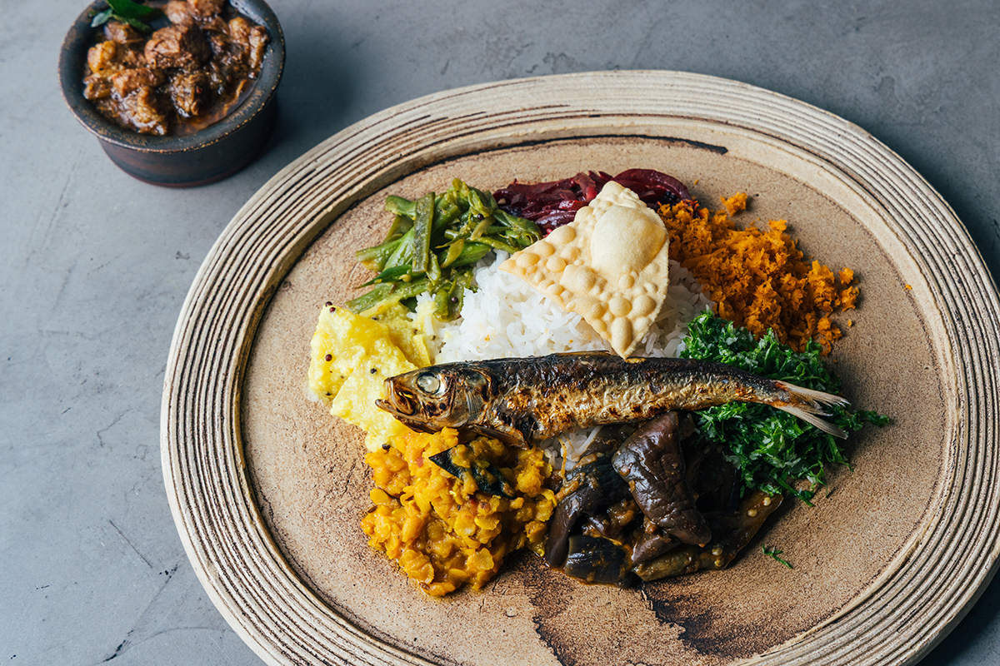
Кадзусиро Ито больше двадцати лет готовит в Токио блюда со специями, которых японцы раньше не пробовали. Его HOPPERS by Spice Cafe в Нихонбаси три года подряд получает Bib Gourmand в «Красном гиде Мишлен», а секрет повар объясняет просто: специи не должны заслонять продукт.
Повар
Специи, найденные в дороге
Кадзусиро Ито в 26 лет ушёл с работы, чтобы увидеть мир, и отправился в кругосветное путешествие без даты возвращения. Оно растянулось на три с половиной года. Больше всего ему запомнились люди и еда, а среди еды специи. В Японии тогда было принято думать, что специи нужны только для карри, а он успел попробовать, как с ними готовят в разных странах.
Вернувшись, Ито решил стать поваром. Три года он учился ремеслу и в 2003 году открыл Spice Cafe в жилом квартале старого Токио, в районе Сумида. Следующие десять лет он каждый год закрывал ресторан на месяц и уезжал стажироваться на кухни отелей и ресторанов за границей, чаще всего в Индии. Карри, которые там готовят из целых специй, его поразили. В Японии индийское карри в те годы только начинали узнавать, а ресторанов южноиндийской и непальской кухни или бирьяни почти не было. Ито начал подавать незнакомые японцам блюда со специями больше двадцати лет назад.
«Чили, куркума, кориандр, кумин... В индийском доме обычно используют около десяти специй. Меняешь пропорции, и получаются совсем разные вкусы. Это меня и увлекло»
Кадзусиро Ито
Его книга о блюдах Spice Cafe в 2015 году получила гран-при премии Gourmand World Cookbook Awards. Повар показывает, что специи нужны не только для карри: работает с японскими специями и продуктами сезона и подбирает к своим блюдам японское сакэ.
Принцип
Специи только рядом с продуктом
Главное правило Ито звучит так: не полагаться на специи слишком сильно. Важнее всего сам продукт. В Японии столько вкусных продуктов, что специи нужны лишь затем, чтобы раскрыть в них то, что без помощи не проявится. Второе правило касается сезона.
«В Индии и Шри-Ланке о временах года почти не думают, а в Японии их четыре. Хочется, чтобы гость почувствовал сезонный продукт, и глупо, если специи его заглушат. Поэтому надо знать и свойства специй, и сам продукт»
Кадзусиро Ито
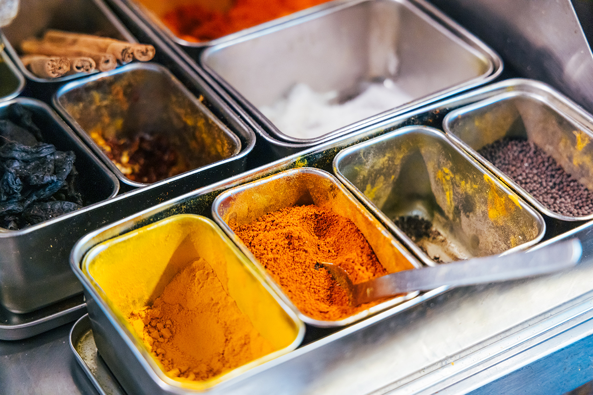
HOPPERS
Шри-Ланка из японских продуктов
Ресторан шри-ланкийской кухни HOPPERS by Spice Cafe открылся в 2021 году в квартале Кабуто-тё в Нихонбаси. Сама кухня Шри-Ланки увлекает Ито уже тридцать лет.
«Шри-ланкийская еда не бьёт специями, как индийское карри: на первом месте продукт. Мальдивская рыба даёт вкус бульона, близкий японцам. И овощей можно съесть много самых разных»
Кадзусиро Ито
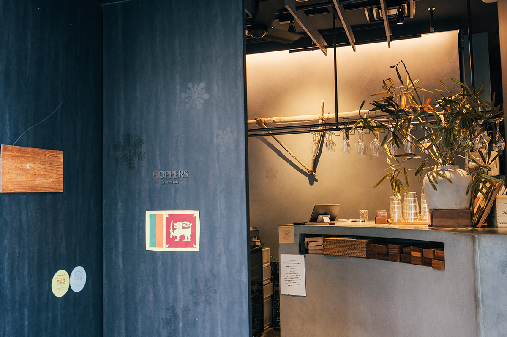
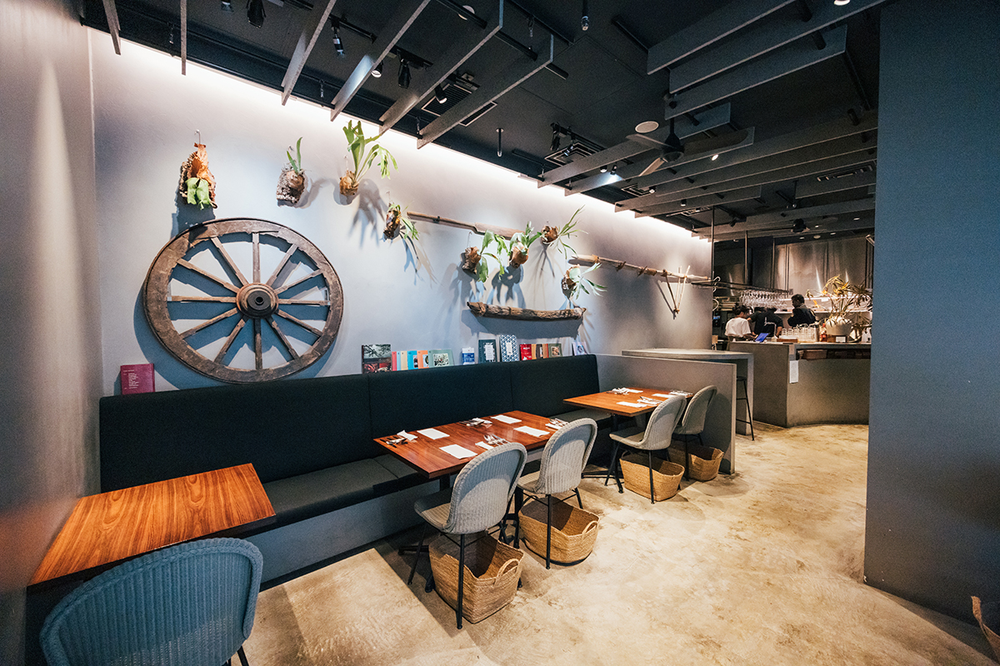
Карри в Шри-Ланке чаще всего густые, почти без соуса, и чёткой границы между карри и гарниром там нет. Обед «рис и карри» это тарелка, на которой рядом лежат несколько карри и закусок. Главные специи страны: «карапинча», листья карри, «рампе», листья пандана, и смесь «тунапаха», которая идёт почти во все блюда. Листья обжаривают в масле, чтобы раскрыть аромат. Пальмы на острове растут повсюду, поэтому кокос входит в кухню в любом виде: масло, молоко, стружка.
В HOPPERS берут за основу традиционные шри-ланкийские блюда и готовят их из японских продуктов сезона. Обычно к «рису и карри» подают три-четыре карри, а в HOPPERS на обед кладут восемь-девять, и такая тарелка стоила 1650 иен в 2025 году. Целая вяленая сардина на ней появилась вместо шри-ланкийской солёной сардины: на острове её, очень солёную, едят понемногу, как японцы маринованную сливу умэбоси. Здесь подают вяленую сардину из того района Японии, где она в этот момент лучше всего. Посуду для обеда сделала керамистка с Окинавы.
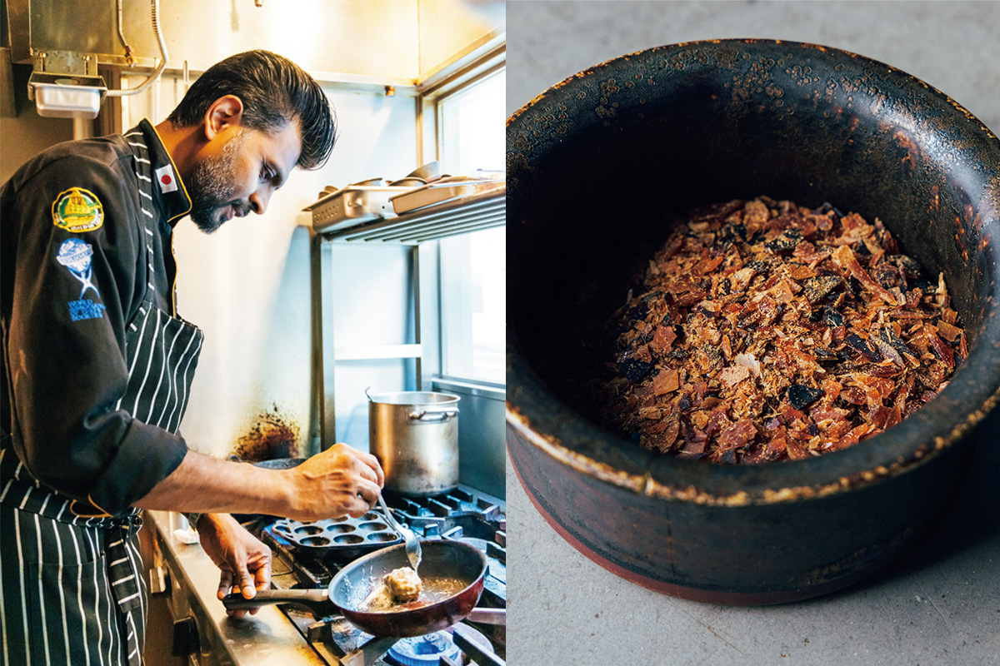
Рыбу и морепродукты поставляет оптовый торговец с Цукидзи, который ведёт дело уже в третьем поколении. В Шри-Ланке тоже едят много рыбы, но обращаются с ней не так бережно, как в Японии. Перед открытием вся команда ходила по рыбному рынку Тоёсу: Ито хотел, чтобы повара увидели японский рыбный рынок своими глазами. Однажды в вечернее карри пошли моллюски окисидзими, которых и в Японии пробуешь нечасто: томатная основа, бульон из раковин и шри-ланкийские специи дали совершенно новый вкус.
Ужин
Курс от закусок до десерта
На ужин HOPPERS подаёт курс «омакасэ», в 2025 году он стоил 7150 иен, подбор вин к нему 6050 иен.
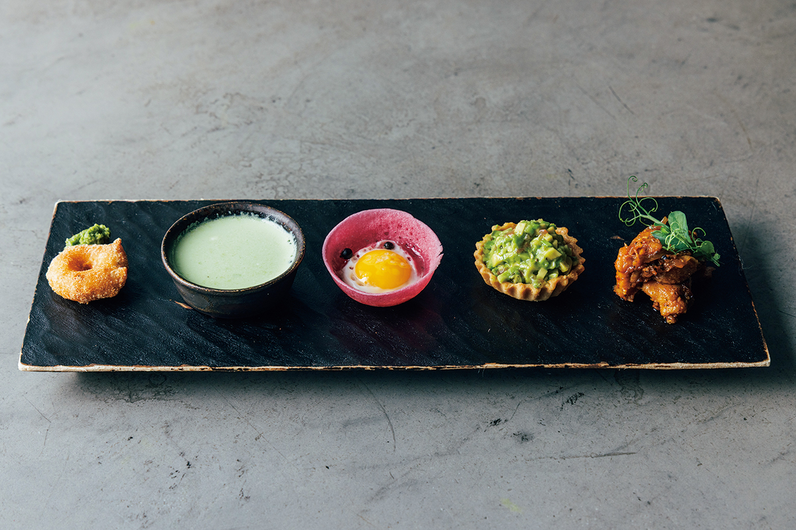
Закусок пять: пончик из бобовой пасты «ваде», шри-ланкийская целебная каша «колакенда» (в тот день суп из японской петрушки мицуба с красным рисом), «чикен бадун», обжаренная со специями курица, тарталетка с авокадо и чёрным перцем. Пятая закуска дала имя ресторану: «хоппер», блинчик из рисовой муки и кокоса. Здесь его пекут в миниатюре, со свёклой в тесте и перепелиным яйцом. В закусках собраны все пять вкусов, и к ним наливают лёгкое белое вино.
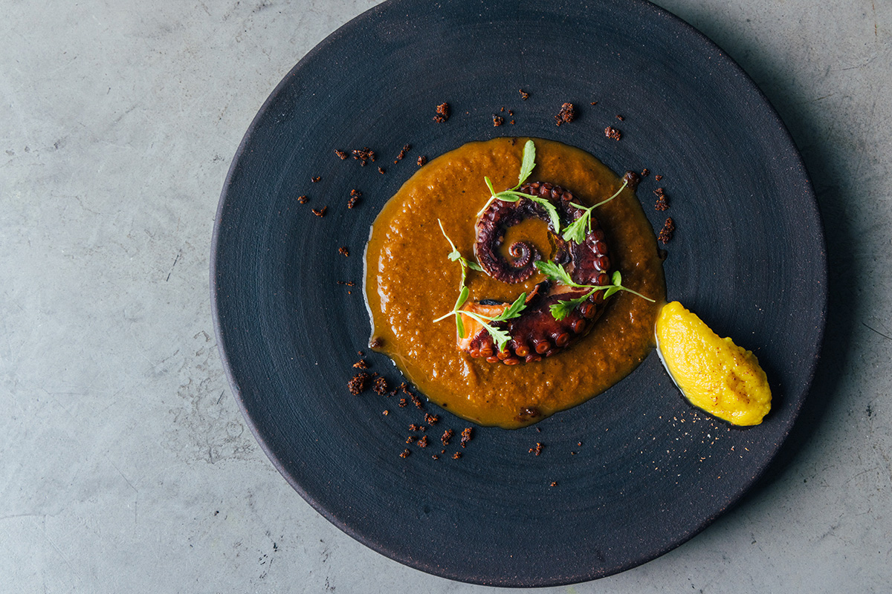
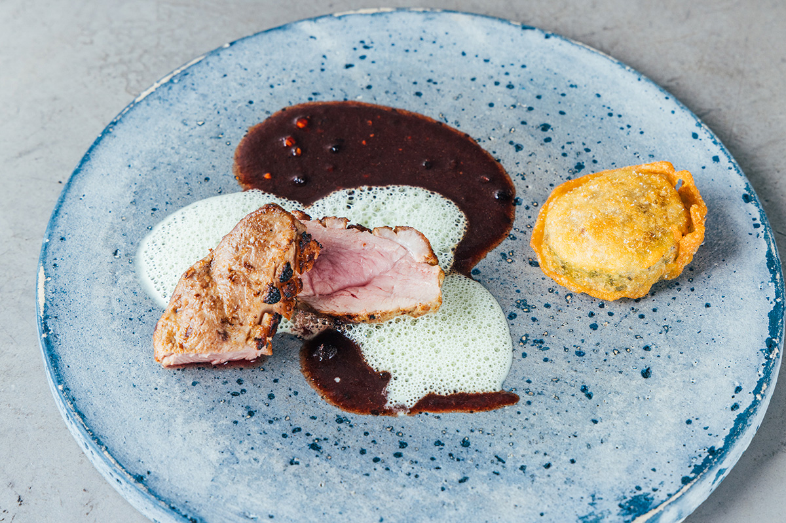
Рыбное блюдо готовят из нежного отварного осьминога. Его подают в соусе со специями на томатной основе с бульоном из того же осьминога и посыпают «катта самбол», смесью мальдивской рыбы и чили. К нему наливают плотное игристое из шардоне, сделанное по шампанскому методу.
Утку маринуют в имбире и чесноке, жарят на её собственном жире и заканчивают сливочным маслом. Соус на красном вине варят на утином бульоне с ноткой корицы, рядом пена из кокосового молока со специями. На гарнир горькая тыква гоя и шампиньоны в кляре из рисовой муки. Вино к утке из долины Роны, на основе гренаша.
«Рис и карри» на ужин
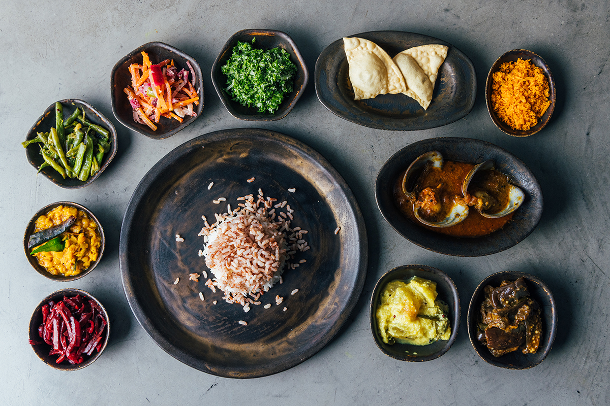
Вечером «рис и карри» подают так: в центре рис из трёх сортов, японского «Акита-комати», басмати и шри-ланкийского красного, вокруг десять мисок. Карри из свёклы, бобовое «паррипу», карри из моллюсков окисидзими и из зимней тыквы, жареные фасоль и баклажаны «тэлдала», маринованная морковь «ачар», посыпки «самбол» из капусты кале и из кокоса, хрустящая бобовая лепёшка «пападам». К рису добавляют по одному-два карри и перемешивают. Каждое блюдо делают из одного продукта, а баланс специй выстраивается по всей тарелке. Сезонных овощей много, и вкус раз за разом оказывается не таким, каким кажется на вид. К этой части наливают сразу два японских вина, оранжевое и розовое: блюдам, где есть все пять вкусов, сладкий, острый, кислый, солёный и горький, подходят оба.
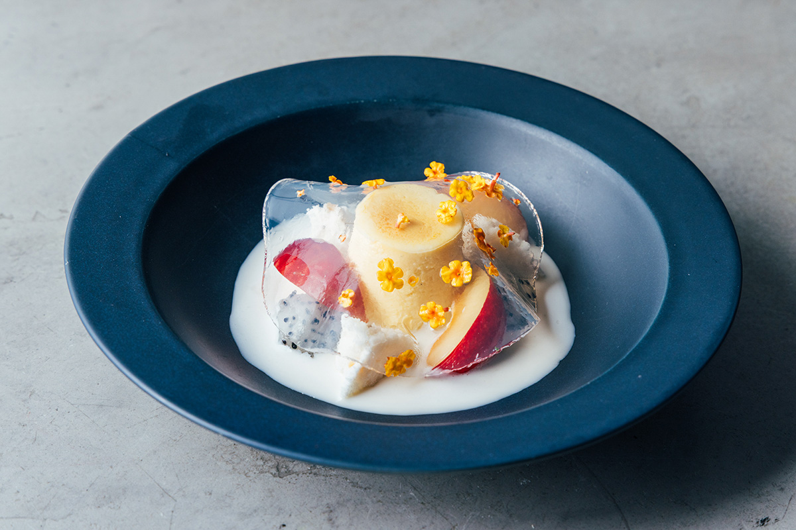
На десерт «алува», традиционная шри-ланкийская сладость из рисовой муки, кокоса, специй и сахара, пудинг из батата и фрукты. Соус делают из кокосового молока, шри-ланкийского напитка «арак» и кардамона, сверху желе агар с ароматом лимонной травы и цветы лантаны. В шри-ланкийской кухне есть бульон и рис, поэтому ей подходит и японское сакэ: в HOPPERS держат лучшие сакэ нескольких сакэварен.
HOPPERS by Spice Cafe
- Адрес
- Токио, район Тюо, Нихонбаси-Кабуто-тё, 7-1, здание KABUTO ONE, 1-й этаж
- Телефон
- +81 50-3201-4010
- Часы работы
- 11:30–15:00 (последний заказ 14:00), 18:00–23:00 (последний заказ 20:30)
- Выходные
- среда
- Цены / Вход
- обед «рис и карри» 1650 иен, ужин «омакасэ» 7150 иен, подбор вин 6050 иен
- Сайт
- hoppers.jp
Spice Cafe
Там, где всё началось
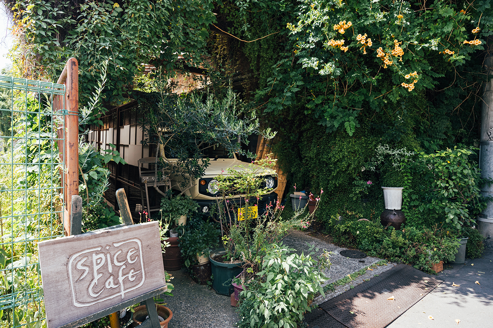
Первый ресторан Ито работает с 2003 года. Вечером по субботам и воскресеньям здесь подают только курс.
Spice Cafe
- Адрес
- Токио, район Сумида, Бунка, 1-6-10
- Телефон
- +81 3-3613-4020
- Часы работы
- 11:30–15:00 (последний заказ 14:00), 18:00–23:00 (последний заказ 20:30)
- Выходные
- понедельник, вторник
- Цены / Вход
- в субботу и воскресенье вечером только курс
- Сайт
- spicecafe.jp
Фото: Майко Фукуи.